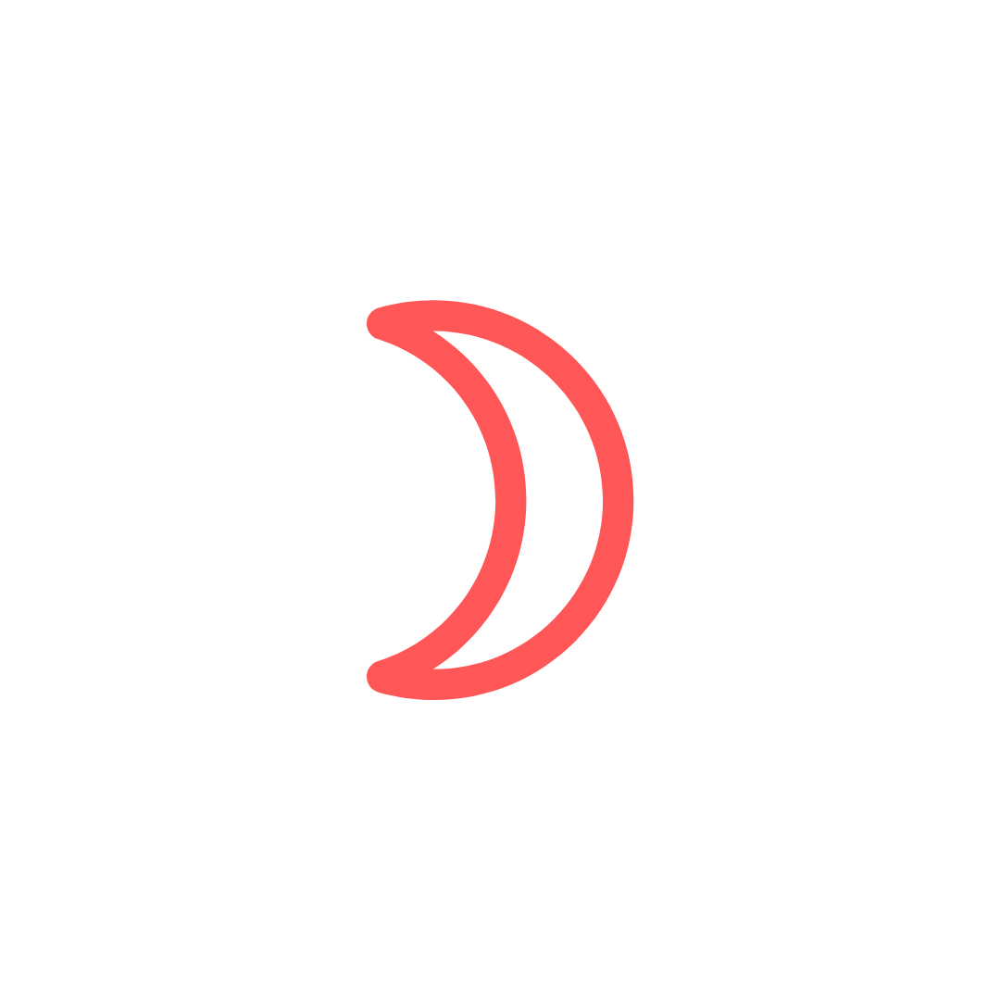
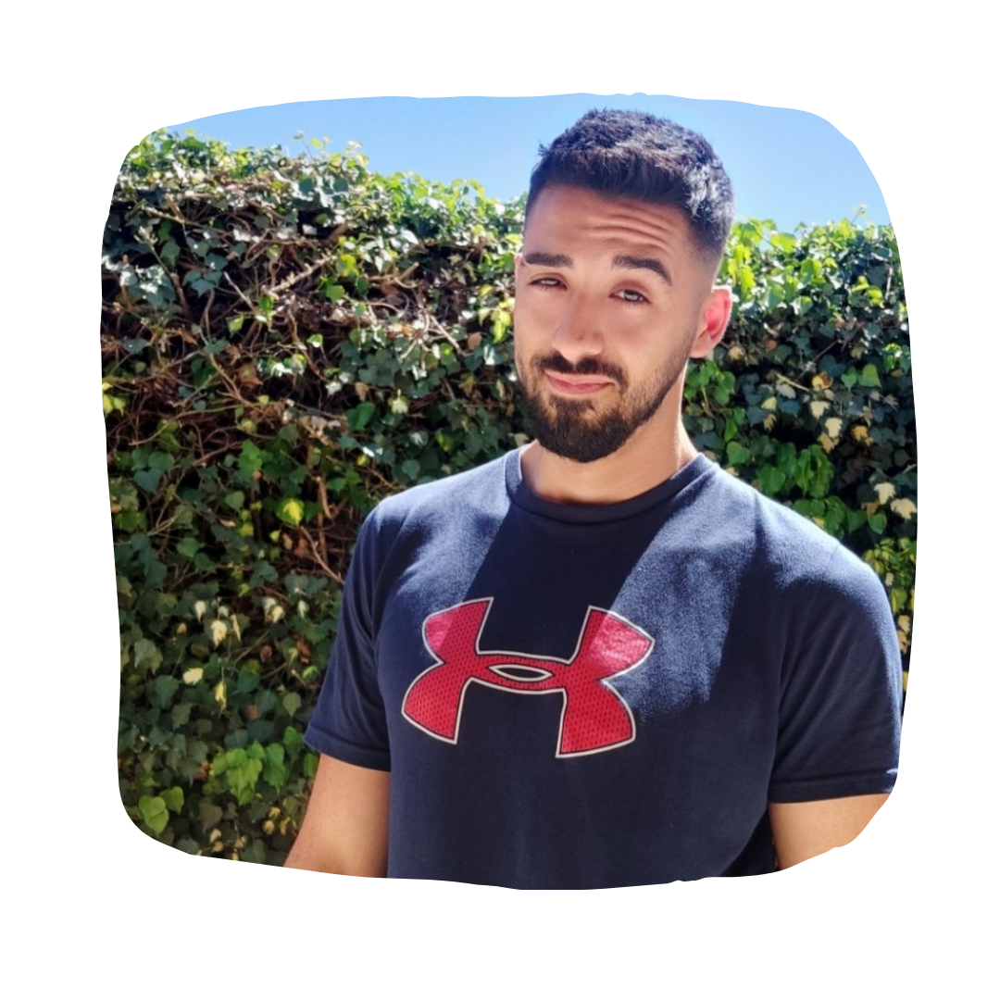

¡Bienvenidxs, yo soy Eric!
Cáncer
Leo

Géminis
Ponganse cómodxs, que les cuento un poco de mi historia..
Nací el 23 de Junio de 1993, un día Miércoles, en la ciudad de Bahía Blanca, Provincia de Buenos Aires (Argentina). Desde muy chico me interesé en todas las cosas que se escapaban de la visión tradicional que tenian el resto de las personas sobre el mundo. Siempre sentía que habia algo mas alla de mi mismo, de todxs y que no se podían explicar ni razonar, pero estaba. Tengo el recuerdo de pasar horas leyendo libros que explicaban las energías que contenían los cuarzos, como podías conectarte con su esencia para recibir su información, como sentir su energía y como te potenciaba entrar en contacto con esa roca tan llena de vida. Mi infancia fue una experiencia muy linda, llena de constantes aventuras, amistadas, barrio, exploraciones por todos lados, vivía moviendome tanto, que cada dos por tres terminaba en el hospital con algun accidente. En mi familia también (sobre todo siguiendo la linea Materna, como buen Canceriano que soy) habia una cierta predisposición en ahondar los misterios de la vida, las energías que traemos, conectarse con planos que son muy sutiles para la percepción de todxs. Como podrán ver, lo que estoy haciendo ahora, ya venia sucediendo hace rato, nada mas que llegó en el momento que tenía que llegar, ni un minuto antes, ni un minuto después. Ahora de adulto, entre medio de un montón de crisis, muertes, renacimientos (sobre todo cuando empece a tener el retorno de Saturno), le quise dar forma a toda esta energía e infromación que me pedía salir por algún lado, tome fuerza y me anime a dar ese salto mas alla de mis propios límites, esos límites que a veces uno se pone para no tener que hacer los cambios, que en el fondo sabemos que son necesarios.
¿Por qué Astrología?
¿Todavía no hablé de Astrología? -Es que lo mejor queda para el final. El camino de la Astrología para mi fue un punto de partida enorme, para realmente empezar a verme y conocerme por quien soy yo y no por lo que sentía que el resto quería ver. Me conecto con partes mías que estaban tan dormidas y tan tapadas, que no tenia idea que me pertenecian (claramente se las proyectaba a algun otro) y así de a poco, con mucha curiosidad entre medio (pues ascendente Géminis y Luna en casa 3) empecé a interiorizarme en este universo de conocimiento, en el que siempre tenés algo más para aprender. Me abrio las puertas a ir mas allá de mi perspectiva del mundo y la amplio de una manera, que me encantaría que todxs puedan acceder a ella. Por ultimo, (sí, ya termino, bancame) es mi deseo que a traves de esta maravillosa herramienta, puedan empezar a hacerse las preguntas correctas, que lxs lleven a cuestionar sus verdades mas arraigadas, y así empezar a transitar un camino de auto-desucbrimiento del que, dejame decirte, no hay retorno, porque una vez que empezas a VER realmente, el efecto dominó que se produce en tu vida es impresionante y creeme que te va a llevar a donde ténes que estar..